Color heredado
Esta tarjeta usa el color declarado en :root.

Esta página reúne tres temas. Primero se explican los metadatos que se declaran en el head de un documento HTML, que indican al navegador cómo interpretar la página y describen su contenido para los buscadores. Después se presenta el sistema de diseño con variables CSS, que permite guardar colores y tamaños de texto en un solo lugar para mantener la coherencia visual de toda la página. Luego se muestra cómo esas variables se heredan y cómo pueden cambiar de valor dentro de un elemento. Por último, dos demostraciones muestran la paleta de colores en los dos temas y la escala tipográfica.
Los metadatos son información sobre el documento que se declara en el head y que, en general, no se muestra como contenido de la página. Cumplen dos funciones: algunos le indican al navegador cómo interpretar y presentar la página, como charset (codificación de caracteres) y viewport (ancho en dispositivos móviles), y otros describen la página para los buscadores y otros servicios, como description. El title cumple ambas: aparece en la pestaña del navegador y suele usarse como título en los resultados de búsqueda.
Un sistema de diseño es un conjunto de decisiones visuales que se definen una sola vez y se reutilizan en toda la página: la paleta de colores, los tamaños de texto y los espacios. Su objetivo es que el diseño sea coherente y que cambiarlo no obligue a modificar cada regla por separado. En CSS, esas decisiones se guardan en variables, también llamadas propiedades personalizadas. Una variable se declara con el prefijo -- dentro del selector :root, que representa al elemento html, y se consulta con la función var(). Como todos los elementos de la página descienden de html, heredan esas variables: cada valor se escribe una sola vez y, si cambia, se actualiza en todos los lugares donde se usa.
Las variables declaradas en :root se heredan: cualquier elemento de la página puede consultarlas con var(). Un elemento también puede volver a declarar una variable con otro valor. Ese valor nuevo rige solo dentro de ese elemento y de sus descendientes, y esa zona se llama alcance (scope). Fuera de ella, la variable conserva el valor declarado en :root.
Esta tarjeta usa el color declarado en :root.
Esta tarjeta declara su propio color, y solo vale dentro de ella.
Cada color se muestra en sus dos versiones: el cuadro de la izquierda tiene el valor del tema claro y el de la derecha, el del tema oscuro. Cada cuadro toma su color de la variable que lleva escrita al lado: los valores claros se declaran en :root y los oscuros en :root[data-tema="oscuro"]. Si uno de esos valores cambia, el cuadro cambia con él.
--color-texto = #101010 (claro) | #F2F2F2 (oscuro)
--color-destacado = #832396 (claro) | #D07EE1 (oscuro)
--color-acento = #126365 (claro) | #209ca0 (oscuro)
--color-fondo = #FFFFFF (claro) | #101010 (oscuro)
Cada renglón está escrito con el tamaño de la variable que nombra. Todos salen del tamaño base del texto, y cada escalón es el anterior multiplicado por 1.25.